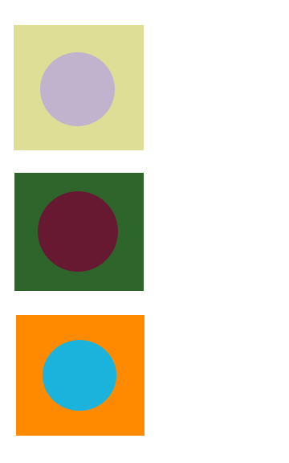

(b) Threshold value of 1.

Part 1: (a) Threshold value of 164.
(b) Threshold value of 1.
Part 2: Threshold value of 121, but no there is not a single 'best' threshold value, there is a range of values which can be used to produce a readable image (~100-135).

Part 3: Colour pairings with the same intensity would be pairing the complimentary colours together. This means the three circle/square images should be made up of the following colour combinations: red/green, blue/orange, purple/yellow.

Part 4: Image was enhanced using a camera raw filter. Increased the clarity, sharpness, highlights and whites. Each of these increases made the contrast between the blacks and whites stronger and also ensured the musical notes and other shapes were all sharpened to avoid any fuzziness/bluriness. Also increased the exposure a little bit to hide the flaw of the paper being somewhat seethrough and an offwhite colour.